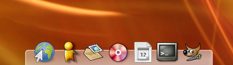

Akamaru Kiba-Dock
Archivierte Anleitung
Dieser Artikel wurde archiviert, da er - oder Teile daraus - nur noch unter einer älteren Ubuntu-Version nutzbar ist. Diese Anleitung wird vom Wiki-Team weder auf Richtigkeit überprüft noch anderweitig gepflegt. Zusätzlich wurde der Artikel für weitere Änderungen gesperrt.
Zum Verständnis dieses Artikels sind folgende Seiten hilfreich:
Hinweis:
Das hier beschriebene Kiba-Dock war nur ein Demo um die Akamaru-Engine darzustellen und hat darüber hinaus keinen Wert mehr für den Entwickler - die hier genannte "Projektseite" ist also eigentlich gar nicht mehr für Kiba zuständig und das neue Kiba-Dock  ist gänzlich anders.
ist gänzlich anders.
Die Akamaru Kiba-Dock ist eine Schnellstartleiste für den Zugriff auf häufig genutzte Programme. Das Besondere an dieser Schnellstartleiste ist, dass sie auf dem Prototyp der Akamaru-Physik-Engine basiert und die Icons physikalisch korrekt über den Desktop "geschleudert" werden können.

Installation¶
Beryl / Compiz¶
Für die Benutzung von Kiba-Dock wird Beryl, Compiz oder xcompmgr benötigt. Kiba-Dock kann auch ohne Beryl/Compiz benutzt werden, doch dann können die Icons nicht transparent dargestellt werden.
Paketinstallation¶
Zuerst müssen die folgenden Pakete installiert werden [1]:
libgtk2.0-dev
libgconf2-dev
Kiba-Dock¶
Da es für Kiba-Dock kein .deb-Paket gibt, muss das Programm manuell kompiliert werden. Zuerst lädt man sich Akamaru von der Projektseite herunter. Als nächstes muss das Paket entpackt werden [3].
Nun muss die Konfigurationsdatei ausführbar gemacht werden. Dazu gibt man im Terminal [2] folgenden Befehl ein:
chmod +x populate-dock.sh
Nun kann man die Konfigurationsdatei aufrufen und anschließend alles kompilieren [4]:
./populate-dock.sh make
"Ubuntu-konform"¶
Um ein .deb Paket zu erhalten muss man zuerst von der Projektseite das Archiv mit dem Quellcode beschaffen und entpacken [3]. Als nächstes öffnet man die Datei Makefile im Ordner des Quellcodes und ersetzt folgende Zeile:
prefix = $(HOME)
durch
prefix = /usr/local
Als nächstes kann man das Programm fast wie normal kompilieren [4] nur ohne den Aufruf von ./configure.
Benutzung¶
Die Benutzerfreundlichkeit ist noch nicht sehr ausgereift, daher gibt es auch kein Einstellungsmenü oder viele Einstellungsmöglichkeiten. Die Konfiguration beschränkt sich auf das Hinzufügen und Entfernen von Icons sowie vier Einstellungsmöglichkeiten im Gconf-Editor.
Starten¶
Das Dock lässt sich entweder im Terminal [2] starten:
Pfad zum Kiba-Dock Ordner/dock
oder durch einfaches Ausführen (Doppelklick) der Datei dock.
Icons hinzufügen¶
Um Icons zum Dock hinzuzufügen, muss man einfach ein Icon vom Panel oder Gnome-Menü in den kleinen grauen Streifen am Rand des Dock ziehen.
Icons entfernen¶
Um die Icons zu entfernen, muss man den Gconf Editor (nicht als Root) mit dem Befehl gconf-editor aufrufen [2] und dort in die Struktur /apps/kiba/launchers/ wechseln, um die Icon Einträge direkt zu bearbeiten.
Autostart¶
Um das Dock bei jedem Systemstart zu laden, muss man die "Dock-Datei" einfach nur dem Autostart übergeben [5].
Beenden¶
Falls man Kiba-Dock nicht mit der Konsole gestartet hat, wird man vergebens nach einem Beenden-Button suchen, aber man kann das Dock (den Prozess) manuell beenden.
Entweder mit der Konsole [2]:
killall dock
oder über die Systemüberwachung, den Prozess dock beenden.
"System --> Administration --> Systemüberwachung"
Konfiguration¶
Es gibt nur vier Konfigurationsmöglichkeiten für das Kiba-Dock und für die Konfiguration gibt es kein Menü. Man kann die Einstellungen aber mit dem Gconf-Editor bearbeiten.
Dafür einfach die Konsole öffnen und den Gconf-Editor starten [2]:
gconf-editor
Im Untermenü "/apps/kiba/options/" findet man die vier Konfigurationsmöglichkeiten für Federkraft, Reibung, Haftung und Position.
Federkraft¶
Hier kann man die Federkraft - elasticity (Bounce Back) - der Icons festlegen. Die Federkraft gibt an wie stark die Icons voneinander "abfedern".
Hinweis:
Der Wert sollte zwischen 0,1 und 0,9 liegen. (Standardwert ist 0,9)
Ein niedriger Wert lässt die Icons starrer verhalten und ein hoher Wert sorgt für einen geschmeidigeren Kontakt und eine höhere Abfederung mit anderen Icons.
Achtung!
Ein zu hoher Wert kann das Dock instabil machen und zum Absturz bringen.
Reibung¶
Die "friction" legt die Reibung des Desktops fest. Eine niedrige Reibung (ein niedriger Wert) lässt die Icons länger auf dem Desktop in Bewegung und gibt ihnen eine sehr schnelle Beschleunigung.
Hinweis:
Der Wert 1 erzeugt ein Perpetomobile, so das die Icons nie wieder aufhören sich zu bewegen.
Der Wert sollte zwischen 1 und 20000 liegen (Standardwert ist 150).
Ein hoher Wert hingegen lässt das ganze sehr träge und langsam erscheinen und gleicht einem Zeitlupen Effekt.
Achtung!
Ein zu hoher Wert kann das Dock instabil machen und zum Absturz bringen.
Haftung¶
Der Wert für K legt die Stärke des Magnetfeldes des Docks fest, also die Haftung der Icons am Dock. Je höher dieser Wert ist, je stärker bleiben die Icons an dem Dock haften, aber umso schwerer lassen sich sich zusammenfügen, da sie eine sehr hohe Bindung zu dem Dock haben. Ein niedriger Wert hebt die Bindung mit dem Dock auf und die Icons kommen nur träge zum Dock zurück. Der Wert 1 "entmagnetisiert" das Dock und die Icons kommen nicht mehr zum Dock zurück.
Hinweis:
Der Wert sollte zwischen 1 und 50 liegen. (Standardwert ist 0,9)
Position¶
Mit diesem Wert kann man die Position des Dock festlegen.
Diese kann auch verändert werden, indem man das Dock durch Drag & Drop an die richtige Position schiebt, dazu zieht man einfach das Dock mit der Maus an die gewünschte Position.
Links¶
Dock
 - Allgemeine Erläuterung des Begriffs Dock in der Wikipedia
- Allgemeine Erläuterung des Begriffs Dock in der Wikipedia kiba-dock.org
- Projektseite des Akamaru basierten Kiba-Dock
- Erstellt mit Inyoka
-
 2004 – 2017 ubuntuusers.de • Einige Rechte vorbehalten
2004 – 2017 ubuntuusers.de • Einige Rechte vorbehalten
Lizenz • Kontakt • Datenschutz • Impressum • Serverstatus -
Serverhousing gespendet von